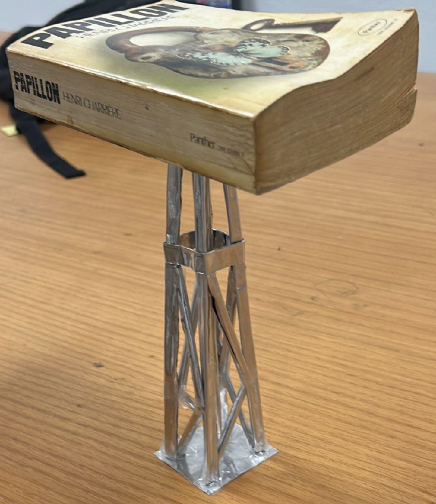

End-to-end design, fabrication and physical load testing of a minimal-material aluminium truss structure — using topology optimisation and FEA to eliminate dead weight while maintaining structural integrity under dynamic load.

To design and fabricate a load-bearing structure capable of supporting a specific weight while minimising the structure's own mass — adhering to strict material constraints and geometric limitations.
The primary constraint was the strength-to-weight ratio. With a limited material budget, the structure had to resist dynamic loads without buckling. The key insight was identifying zero-force members in the truss and eliminating them — saving weight without compromising integrity.